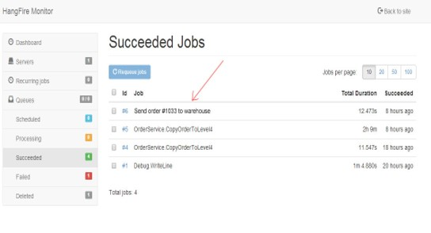
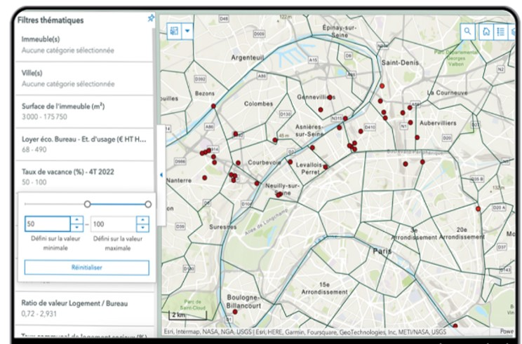

Présentation de l'entreprise
Depuis son établissement, CBRE est une entreprise innovante qui fournit des solutions technologiques avancées pour les entreprises. Avec une équipe hautement qualifiée, CBRE se spécialise dans l'optimisation des processus commerciaux grâce à l'utilisation intelligente des technologies.
Projet - Utilisation d'une API et de swagger
 Technologies utilisées :
- Angular pour l'interface utilisateur
- Power BI pour la visualisation des données
- Hangfire pour la gestion des tâches en arrière-plan
Objectifs :
- Optimisation des processus commerciaux
- Logiciel de trie sur la map de l'application CBRE permettant de voir les différents siège disponible pour vendre aux clients selon leurs besoins
Conclusion du stage
Mon stage chez CBRE a été une expérience très enrichissante. J'ai eu l'opportunité de travailler sur un projet stimulant qui m'a permis d'approfondir mes compétences en développement web et en gestion de projets. Je suis reconnaissant envers toute l'équipe pour leur soutien et leurs conseils.